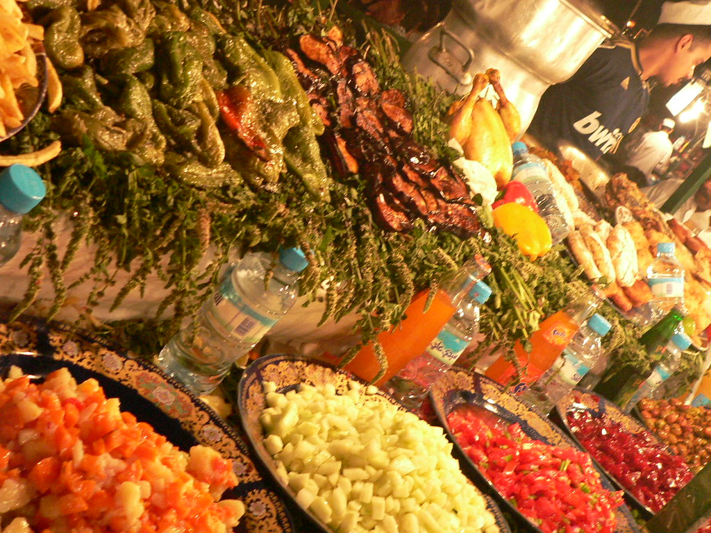

Authenticity
Recipes are researched with home cooks and respect the regions and communities they come from.
We are a community of food lovers on a mission to share the depth, diversity and history of African cuisine with the world.
To celebrate, preserve and share Africa's food heritage — one recipe, one story and one shared table at a time.
African cuisine is often talked about as one thing, but it is really thousands of traditions passed down through generations. We document authentic recipes, honour the people and places behind them, and make them easy for anyone, anywhere, to cook at home.
Recipes are researched with home cooks and respect the regions and communities they come from.
Food is meant to be shared. We celebrate the gatherings, rituals and people around every table.
We help preserve ancestral grains, techniques and stories so future generations can enjoy them.
African food has been shaped by ancient farming, great trade routes and the movement of people across oceans — and in turn, it has transformed kitchens around the globe.
Teff was domesticated in the Ethiopian highlands, African rice along the Niger River, and sorghum and millet across the Sahel — some of the world's earliest farmed crops. Coffee also has its origins in Ethiopia.
Trans-Saharan caravans and Indian Ocean trading ships carried salt, gold and spices, linking West Africa to North Africa and the Swahili coast to Arabia and India.
Chillies, maize, cassava, tomatoes and peanuts arrived from the Americas and were transformed into African staples. Today it's hard to imagine jollof without tomatoes, or ugali without maize.
Enslaved Africans carried okra, black-eyed peas, rice-growing knowledge and cooking techniques to the Americas, shaping the food of the American South, the Caribbean and Brazil. Even the word gumbo comes from a Bantu word for okra.
African chefs, restaurants and ingredients are celebrated from Lagos to London to New York, and dishes like jollof and injera are now loved worldwide.
Every evening, Marrakech's main square transforms into one of the world's most famous open-air food markets. Smoke rises from grills, stalls serve harira soup, tagines, snails and fresh orange juice, and storytellers and musicians fill the air.
UNESCO recognised the cultural space of Jemaa el-Fnaa as a Masterpiece of the Oral and Intangible Heritage of Humanity in 2001.
Explore North Africa
Dinner at the food stalls of Jemaa el-Fnaa.
All food photography on this site is by real photographers and shared under Creative Commons licences via Wikimedia Commons and Flickr.